How Pit Planner works
Tell it what you're cooking and when you want to eat. It works backward from dinner, tells you when to light the smoker and when each food goes on, then rings you at every step.
One Saturday, planned backward
Dinner at 5:00 PM: a 12 lb brisket, 2 lb of wings and 4 chicken breasts. You pick the serve time. Pit Planner works out the rest.
- Fire the smoker to 225F
- Brisket on
- Check the brisket, wrap once the bark is set
- Wings on
- Brisket off, rest 60 min
- Chicken breasts on the griddle
- Serve
1Set up, once
Three short screens the first time you open the app. You can change all of it later in Gear.
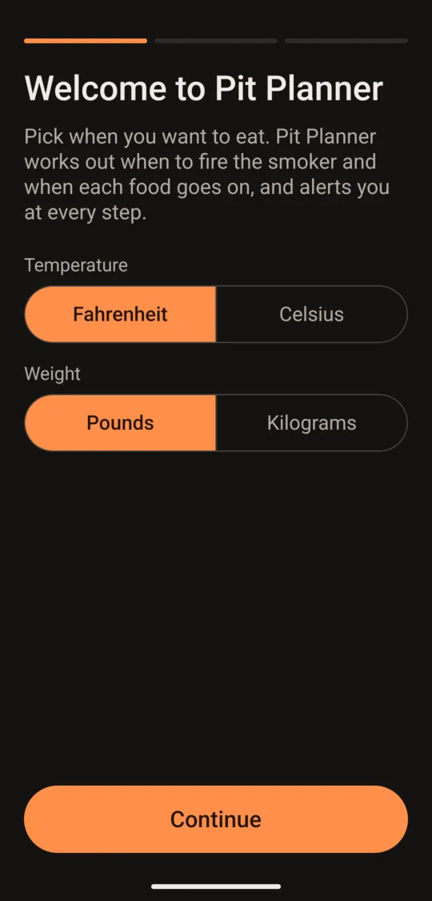
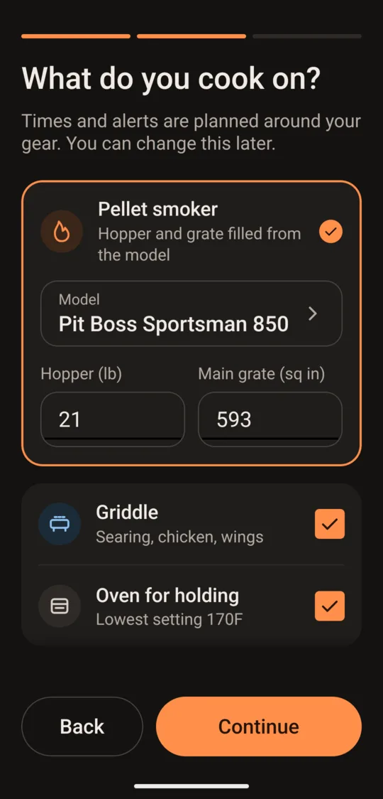
Pick your units and your gear
Choose F or C, pounds or kilograms. Then tell it what you cook on: your smoker, a griddle, an oven for holding food warm.
Search the smoker list by brand or model. When it knows your smoker, it fills in the hopper size and grate area for you. Not listed? Enter it yourself.
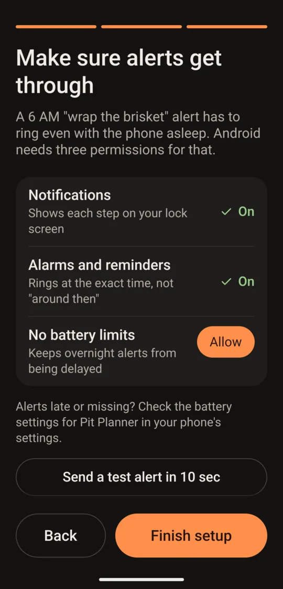
Make sure alerts get through
A 6 AM "wrap the brisket" alert has to ring with the phone asleep. Allow notifications, exact alarms and no battery limits, then send yourself a test alert and lock the phone.
Every step rings as a real alarm, like your alarm clock, not a quiet notification you might miss.
2Build the plan
Add what you're cooking, pick when you want to eat, and the times fill in.
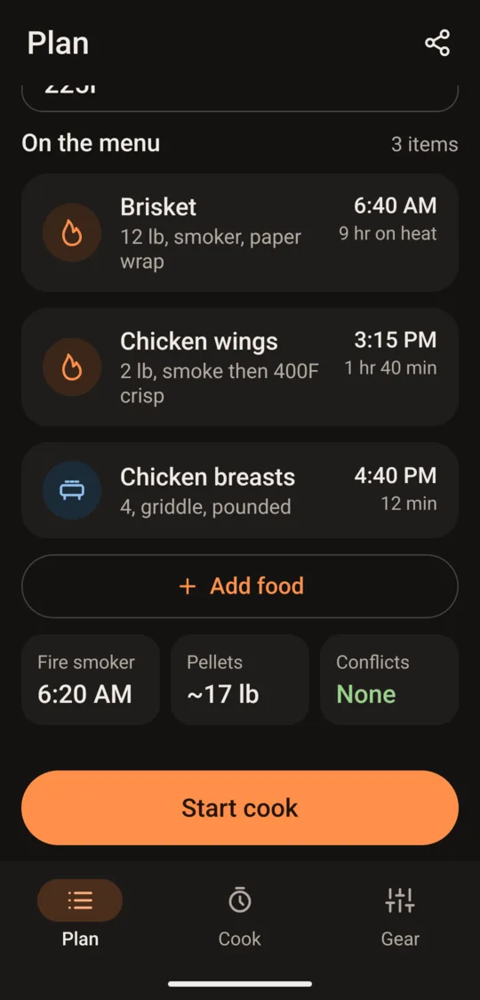
Pick a serve time
Choose Ready by and give the time you want to eat, or Start at and give the time you want to light the smoker. The other one is worked out for you.
Each food on the menu shows when it goes on and how long it's on heat. Tiles at the bottom show when to fire the smoker, how many pellets the cook needs and whether anything conflicts.
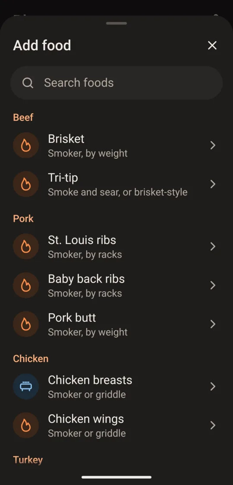
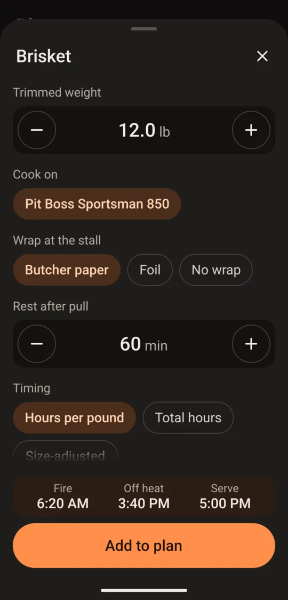
Add food
Search or browse beef, pork, chicken and more. Set the weight or count, the cooker, how you wrap and how long it rests.
The bar at the bottom shows Fire, Off heat and Serve, and updates as you change things. Timing starts from hours per pound and you can set your own rate or total hours.
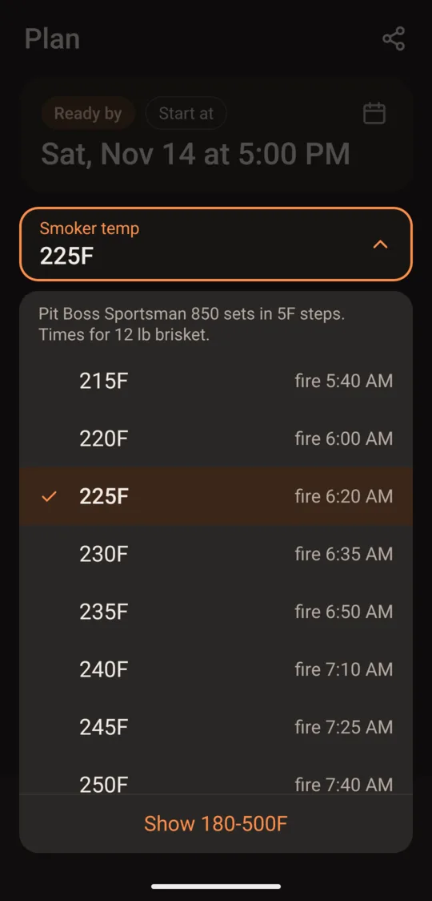
Try a different smoker temp
Open Smoker temp to see the fire time you'd get at each setting your smoker can do. Run hotter if you'd rather sleep in.
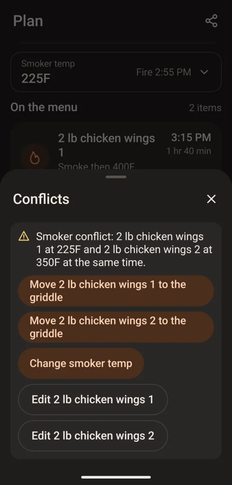
Fix conflicts in one tap
If two foods need the smoker at different temps at the same time, or the cook needs more pellets than your hopper holds, the plan tells you in plain words.
Most problems come with a fix: move a food to the griddle, change the smoker temp, or edit the food. You can still start a plan with a warning. It's your call.
3Cook
Tap Start cook. From here the app keeps time so you don't have to.
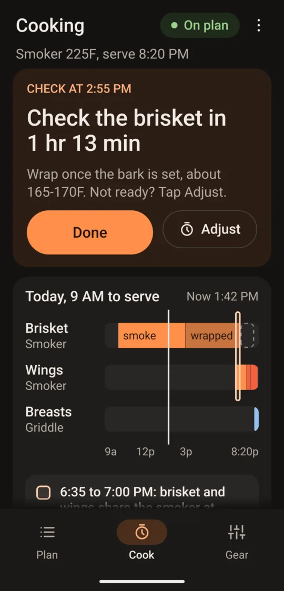
See what's next
The big card shows the next step and how long until it's due. A chip says whether you're on plan, behind or ahead. Below, one lane per food shows the whole day.
Tap Done when you've done a step. If you're early or late, choose to keep the serve time (the food holds longer or shorter) or move it.
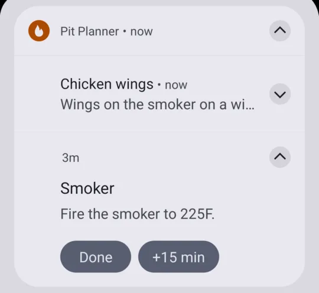
Answer from the lock screen
Each step rings, even with the phone locked. Tap Done or +15 min right on the alert without opening the app. Miss it and it rings again every 10 minutes.
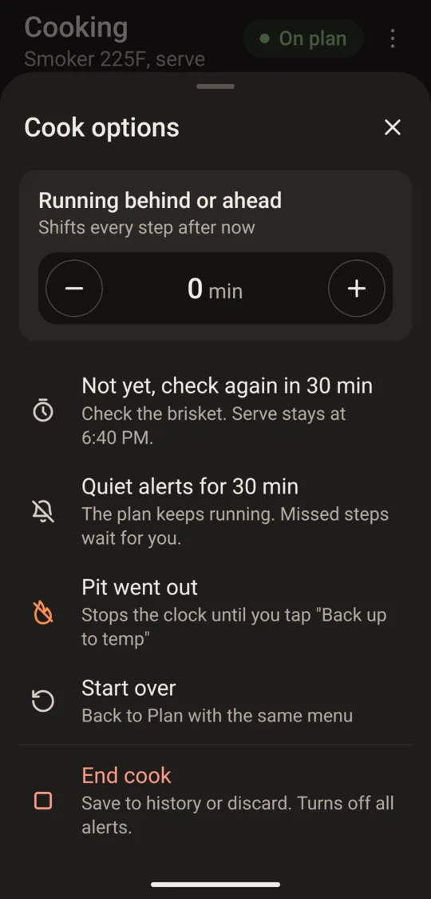
When the cook doesn't follow the plan
- Running behind or ahead: shift every step after now.
- Not yet: check again in 30 minutes.
- Quiet alerts for 30 minutes while you're busy.
- Pit went out: stop the clock until you're back up to temp.
The plan re-works itself each time and tells you what happens to serve.
4Learn and share
Every cook you save makes the next plan closer to how your smoker really runs.
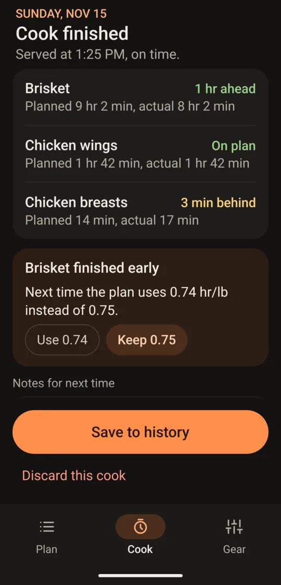
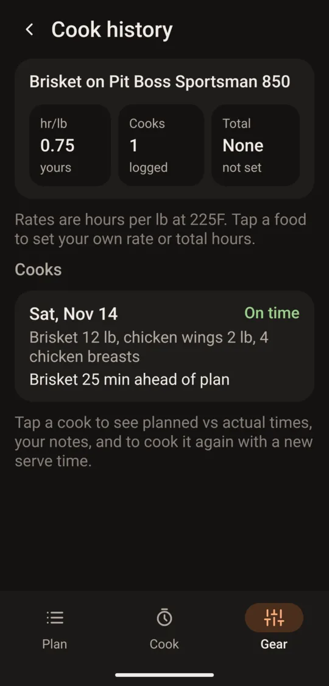
It learns your smoker
When the cook is done you see planned against actual time for each food. If the brisket finished early, the app offers a new rate for next time. Keep it or don't.
Saved cooks live in Cook history with your notes. Tap Cook again to put the same menu back on the plan with a new serve time.
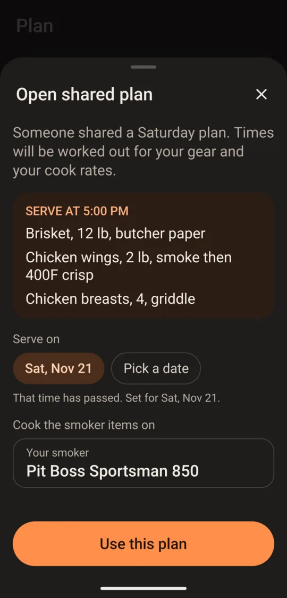
Share a plan
Send your menu to someone cooking with you by text, email or any app. When they open it, the times are worked out for their gear and their cook rates, not yours.
The file holds the menu, serve time and smoker temp. Nothing personal.
Try it
Free, Android only, US only for now. No account, no ads, no tracking.